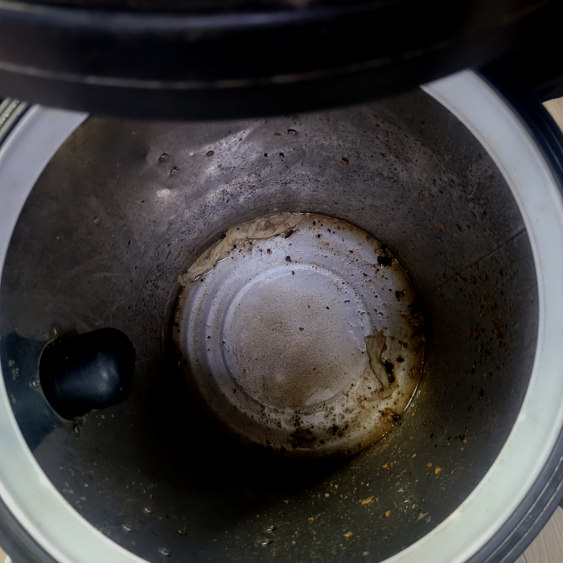
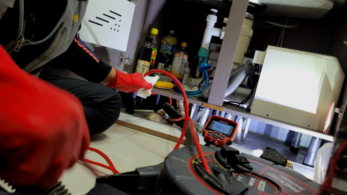
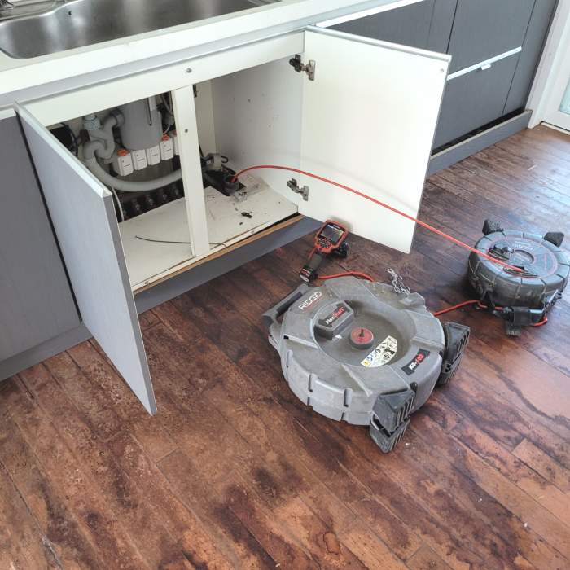
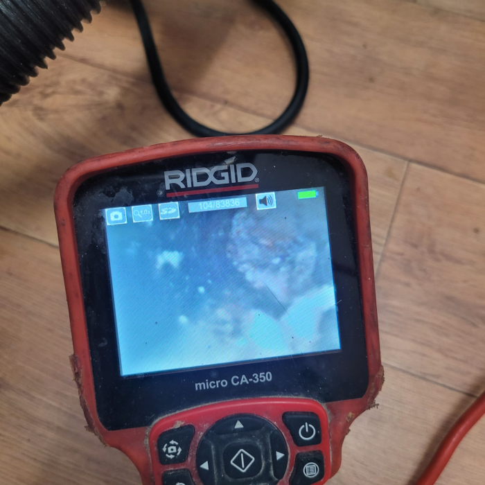
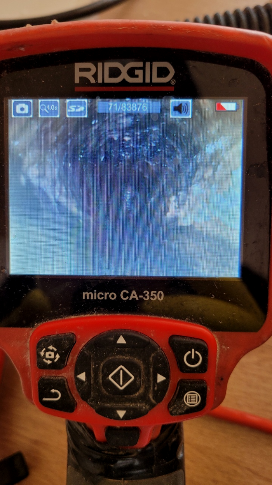
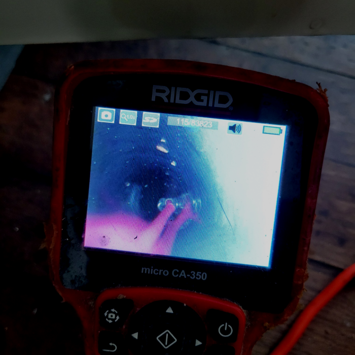

🏠 수지구 상현동 하수도막힘 성복동 배수구뚫는곳 청소설비
용인 싱크대막힘 전문 시공 후기

📋 작업 개요
- 위치: 용인
- 서비스 유형: 싱크대막힘, 변기막힘, 하수구막힘, 배관막힘, 역류해결, 뚫는업체, 배관청소, 고압세척
- 작업 일시: 2024. 1. 3. 0:09
- 업체명: 하수구수사대 (010-5615-2118)
🔍 문제 상황
안녕하세요^^
설비전문업체 "하수구수사대"를 찾아주셔서 고맙습니다.
퇴수는 워낙 당연하게 이용하는 시설이기 때문에 인지하지 않고 모르고 살아가지만 우리에게는 없어서는 안될 설비중에 하나입니다.
해야 할 일을 하수도가 막혔다는 이유 하나로 제때 못하게 되니 그로 인한 스트레스도 쌓이게 되죠. 하수도는 막힘과 동시에 해결을 해야합니다. 일반인이 손 볼 수 없는 상황들이 대다수인 만큼 전문업체의 도움이 꼭 필요한 분야 중 하나죠.
수지구 상현동 하수도막힘 성복동 배수구뚫는곳 청소설비

🔎 원인 분석
💡 전문가 진단: 수지구 상현동 하수도막힘 성복동 배수구뚫는곳 청소설비
배출구 구조를 확실히 이해하고 있어야만 작업 진행을 하기 전에 어떤식으로 작업을 할지 막히게 되었을지 간단하게 예상을 할 수도 있고 진행을 할때 이런 전문지식이 있어야 작업시간 단축에 큰 도움이 됩니다.
준비가 되어있더라도 노하우가 없으면 의미도 없어지기 때문에 저희 배출구업체는 오랜시간 쌓은 경험과 경력을 토대로 노하우를 쌓아 올렸고 여러 방면에서 문제점을 최신기계로 해결하고 방법을 터득하였기 때문에 많은 분들이 신뢰를 가지고 저희 업체를 이용해 주시고 있어요! 작업중에 예상치 못한 일들도 발생하게 되는데요.
수많은 분들이 업체들을이 이용했어도 또 퇴수구막힘증상이 발생되어 반복적으로 더 돈을 내고 청소하게 되는것을 잘못 지여져 있는게 원인이 아닌 똑바로 세척하지 않은 것 때문입니다.
배관막힘 배관청소작업은 고압세척 그리고 이러한 작업은 플렉스 샤프트로 진행을 하는데요. 배관세척에 사용하는 장비의 장점은 직접 하수관에 들어갈 수 있고 직접 슬러지를 분쇄해 준다는 점이 장점이라고 할 수 있습니다. 이 장비 덕분에 내부 덩어리를 깔끔히 제거할 수 있습니다.
당시에는 통수가 확보되어 퇴수물을 다시 사용할 수 있었지만 채 1달이 지나기도 전에 또 다시 유속이 느려지고 막히는 듯한 느낌이 드셨다고 하셨습니다. 주변 지인들에게 수소문을 하던 중 전문 최신장비를 적절하게 사용하면서 문제를 완벽하게 해결해 주는 저희를 소개받으셨다고 합니다. 한 번 작업을 받기 이전에는 물이 잘 빠지지 않더라도 마트에서 세제를 구입해와서 부어주는 것만으로도 충분히 문제가 해결되었을 것입니다.

🔧 작업 과정
베테랑의해결법과 간단한물건들과의 차이가 어떤것일지 생각해보길바래요.하수깊은데를 확인할수있어서 간단한것부터 다르다는것을 보실수있습니다.안쪽을볼수없을때에 뚫리기만을기다리면 의문이들게되는데요.똑바로해결됐을까? 라는생각이듭니다.
배수업체 비양심적인곳은 해결하지않아도 출장비를요구하기에 이러한부분을 신경쓰지않는다면 돈만낭비하게돼죠
이처럼 샤프트기를 이용한 작업을 마무리한 후에는 내시경을 사용해배출관배관 내부를 꼼꼼히 살펴보면서 지저분했던 배관이 매끈하게 청소되었는지를 살펴봅니다. 이러한 상태는 물이 흐르며 이물질이 붙고 축적되어 굳어지는 상태가 되기까지 오랜 시간이 걸리기 때문에 오래도록 배출관배관 막힘이나 악취로 인한 고민을 하지 않아도 된다고 볼 수 있습니다.
단순히 배출구 뚫고 얼마 지나지 않아서 다시 막히는 경우도 종종 있는데 그럴 땐 기름들이 배출구배관에 단단하게 박혀 있어 좁아진 배수관으로 물이 시원하게 흘러나가지 못하고 역류하기 때문에 이럴 땐 배출구고압세척으로 배관세척을 하시는 것이 매번 뚫는 하수관 청소보다 훨씬 효과적입니다.
배관배관을 막고 물이 통하지 않게 하다 보니 당연히 그 속에서 점점 더 섞어가면서 악취까지 발생시켜서 생활하기 힘들게 만들기 때문에 미리 배관 스케일링을 받고 이사를 가시면 편합니다.
모든 과정은 고객님께 상세히 작업과정을 설명해 드리고 있으니 걱정하지 않으셔도 됩니다. 배출구배관 속 굳어있는 이물질 제거를 위해 샤프트 장비를 투입하여 딱딱한 것들을 분쇄했습니다.
회는 우리가 평소에 몸을 씻으면서 발생하는 비누거품과 각질들이 뭉쳐지고, 굳으면서 생기는 덩어리인데요, 이런 석회들은 하루아침에 발생하는 게 아니며 오랜 기간에 걸쳐 발생됩니다. 스케일링 작업을 진행할 때 하수관내시경 장비는 꼭 사용해야 하는 장비인데요,
방문 시간도 최대한 편하신 시간대로 맞춰드리며 원인부터 해결, 예방에 대한 조언까지 해드립니다. 꽉 막힌 퇴수하수구, 불안한 우수관을 손 보고 싶다면 이제 전문가를 불러주시기 바랍니다.


✅ 작업 완료
모든 현장에서 언제나 최선을 다하고 있으며 최대한 합리적으로 문제를 해결해 드리고 있으므로 도움이 필요하시다면 언제든지 편안하게 문의하여 주시길 바라겠습니다.
#하수구막힘 #하수구뚫음 #하수구역류 #씽크대막힘 #싱크대역류 #오수관막힘 #하수구청소 #욕실하수구막힘 #변기막힘 #하수구뚫는비용 #싱크대수리 #화장실막힘




⚠️ 주방 싱크대 배관 막힘 예방 수칙
- ✅ 기름기가 묻은 식기나 프라이팬은 설거지 전 키친타올로 반드시 기름때를 닦아내세요.
- ✅ 주기적으로 싱크대 개수대에 뜨거운 물을 가득 받아 한 번에 내려 배관 내부 기름을 씻어내세요.
- ✅ 배수구 거름망을 미세한 필터로 사용하시고 음식물 찌꺼기가 틈으로 새어 들지 않게 관리하세요.
- ✅ 베이킹소다와 식초를 뜨거운 물과 함께 일주일에 한 번씩 부어주면 배관 살균과 막힘 예방에 좋습니다.
💡 핵심 정리
- 확실한 장비 작업(내시경 점검 및 샤프트 스케일링)으로 원인을 뿌리 뽑습니다.
- 작업 후 1년 이내에 동일한 부위 재발 시 100% 무상 A/S 서비스를 보장합니다.
- 서울 · 경기 · 인천 전 지역에 24시간 언제든 긴급 출동할 수 있도록 항시 대기 중입니다.
❓ 자주 묻는 질문 (FAQ)
🚨 용인 싱크대막힘 문제로 고민이신가요?
정확한 원인 진단과 확실한 시공으로 재발 없는 해결을 약속드립니다.
24시간 긴급 출동 | 서울 · 경기 · 인천 전지역 | 1년 내 재발 시 무상 A/S